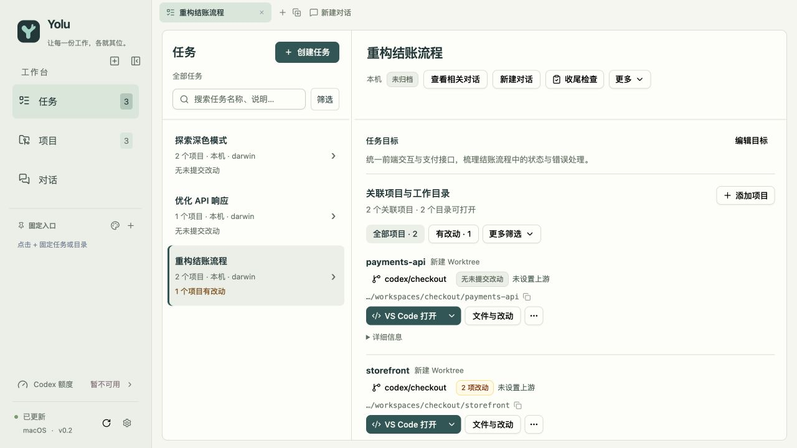

01 / WORK IN CONTEXT
让目标，串起每一个仓库。
为任务关联多个项目，创建独立的 Git worktree，或复用已有目录。跨项目的工作，也能有一条清楚的主线。
checkout-redesign任务工作区
storefront ⑂ feat/checkout
payments-api ⑂ feat/checkout
BRIEF.md 目标与笔记
项目、分支、终端、AI 对话。
让散落的开发上下文，在 Yolu 里各归其位。
少一点切换，多一点专注。

给开发上下文，一个安放的地方
一个功能往往不只属于一个仓库。
Yolu 把相关的工作目录、分支和工具聚在一起，
让你随时知道做到哪里、下一步去哪里。
为任务关联多个项目，创建独立的 Git worktree，或复用已有目录。跨项目的工作，也能有一条清楚的主线。
实际分支、本地修改、上游状态、代码差异。从任务里查看 Git 状态，再继续下一步操作。
从正确的目录进入终端、编辑器或 Codex 对话。用标签页和分屏保留工作现场，再回来时，接着往下做。
从想做，到动手
注册已有的 Git 仓库。你的项目，仍在你熟悉的本地环境里。
写下目标，选择参与的项目，再为每个项目准备分支和工作目录。
查看变更，打开终端或继续对话。下一次回来，从这个任务接着开始。
LOCAL FIRST. OPEN SOURCE.
应用记录保存在本地，仓库留在你的环境里。
Yolu 以 Apache 2.0 协议开放源码。
欢迎使用、查看代码，也欢迎一起让它更好。
开始之前
Yolu 帮你组织任务及其涉及的项目、工作目录和开发工具。你仍然可以使用熟悉的编辑器，Yolu 让你从任务里直接进入相应的工作环境。
安装对应系统和处理器的 Yolu 包，并在仓库所在环境安装 Git。如需使用内置的 Codex 对话，还需要在同一环境安装并登录 Codex CLI。运行安装包不需要 Go、Rust 或 Node.js。
内置对话使用所选环境中已安装并登录的 Codex CLI，沿用该环境的账号及服务商配置。模型可用性、网络请求和费用取决于你的账号及配置。终端中启动的其他 CLI 使用各自的认证。
可以。Windows 版本支持连接 WSL 发行版和用户，在对应环境里执行 Git 和文件操作。每个任务属于一个执行环境，本地和 WSL 项目分别组织。
MAKE ROOM FOR FOCUS.
给你的开发工作，一个清晰的起点。
Apple Silicon / Intel · DMG
可用版本及安装说明以 GitHub Releases 为准。
git clone https://github.com/nite0x/yolu.git